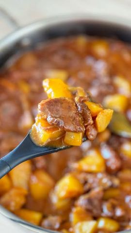

Slano
Preukusan juneći gulaš kao ideja za ručak za celu porodicu!
26. 10. 2024.reel11 sastojaka

Moja beleška
Sačuvano
Ocena
Preukusan juneći gulaš kao ideja za ručak za celu porodicu! Savršeno sočno meso koje se topi u ustima, idealno za hladnije dane koji nam predstoje. 👌🏼 Evo recepta:
Sastojci
- Sastojci
Priprema
1. Uvaljajte kockice junetine u brašno. Na maslinovom ulju i kockici putera, propržite kratko meso sa obe strane dok ne dobije zlatnu boju, zatim ga izvadite sa strane. 2. U isti tiganj dodajte seckani luk i šargarepu, i propržite dok ne puste sok. 3. Vratite meso u tiganj, dodajte bujon i paradajz pastu. Posolite, dodajte malo bibera i začine po ukusu. Ostavite da se sve lagano krčka oko sat vremena. 4. Dodajte krompir, poklopite i kuvajte još 30-45 minuta, dok meso ne postane savršeno sočno, a krompirići mekani. Poslužite i uživajte u pravom porodičnom ručku! 🍲
Originalni opis sa Instagrama
Preukusan juneći gulaš kao ideja za ručak za celu porodicu! Savršeno sočno meso koje se topi u ustima, idealno za hladnije dane koji nam predstoje. 👌🏼 Evo recepta: Sastojci: • 800 g junećeg mesa (plećka), seckano na kockice 🥩 • 2 - 3 šargarepe 🥕 • 2 crna luka 🧅 • 5-6 krompira 🥔 • brašno 🌾 • kockica putera 🧈 • goveđi bujon (kockica za supu rastvorena u 300 ml vrele vode) • ruzmarin, lovorov list i žalfija • 2 kašike paradajz koncentrata • maslinovo ulje • so i biber Priprema 1. Uvaljajte kockice junetine u brašno. Na maslinovom ulju i kockici putera, propržite kratko meso sa obe strane dok ne dobije zlatnu boju, zatim ga izvadite sa strane. 2. U isti tiganj dodajte seckani luk i šargarepu, i propržite dok ne puste sok. 3. Vratite meso u tiganj, dodajte bujon i paradajz pastu. Posolite, dodajte malo bibera i začine po ukusu. Ostavite da se sve lagano krčka oko sat vremena. 4. Dodajte krompir, poklopite i kuvajte još 30-45 minuta, dok meso ne postane savršeno sočno, a krompirići mekani. Poslužite i uživajte u pravom porodičnom ručku! 🍲 • • • #rucak #idejezarucak #ukusnahrana #recepti #ukusno